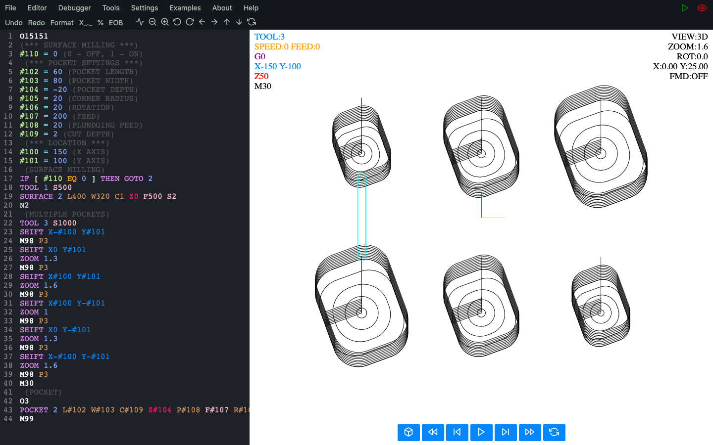

Easy to use
Macro Simulator CNC is the easiest to use and at the same time the most advanced software on the market, which sets a completely new direction.Its simple, understandable and modern design allows you to find and use the required functions very quickly. Moreover, when programming a new contour, program, subroutine or anything else, you will see your progress live in the simulator window thanks to the live toolpath rendering (any change in the code will enlighten the rendered toolpath image).
This software is so easy to use that even installation is just a click away.
Wait no more and try the demo version at: click here
